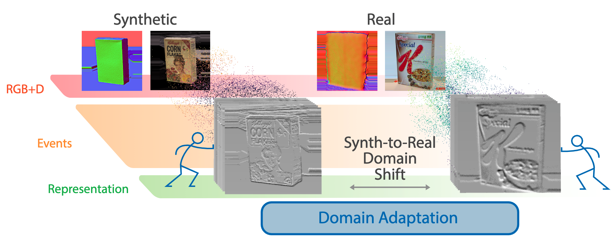
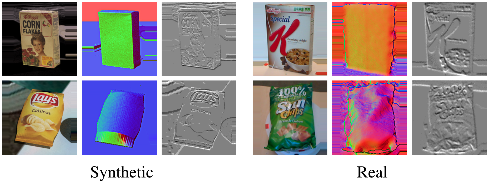
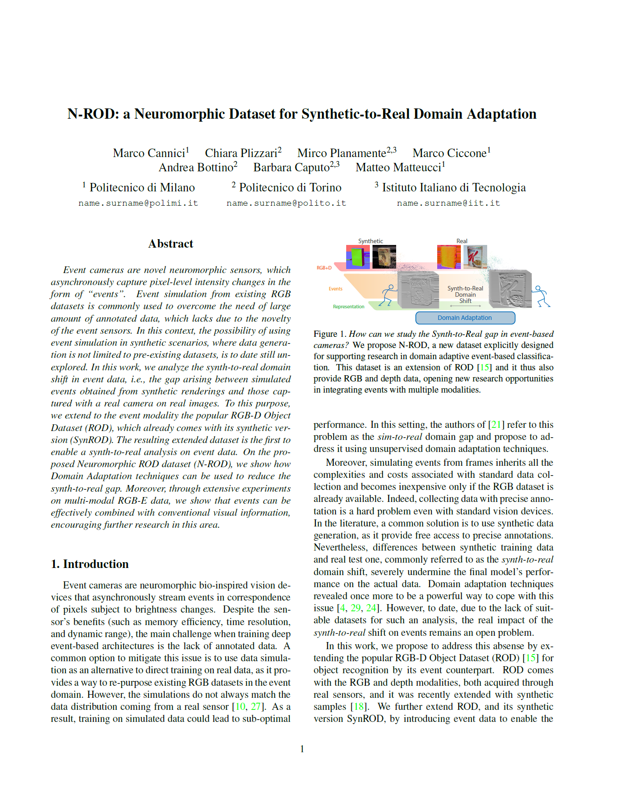

Title
Chiara Plizzari
Politecnico di Torino
Toby Perrett
University of Bristol
Barbara Caputo
Politecnico di Torino, IIT
Dima Damen
University of Bristol
Under review
Under review
[Paper]
[Project]
[Dataset]

Abstract:
Dataset

Paper and Bibtex

Citation
C. Plizzari, T. Perrett, B. Caputo, D. Damen
Paper title
Under review
Original Website Template